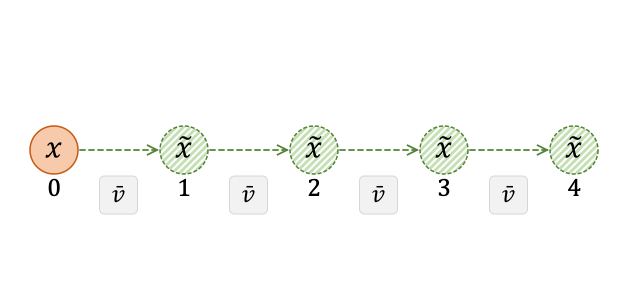
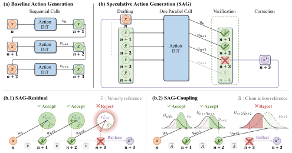
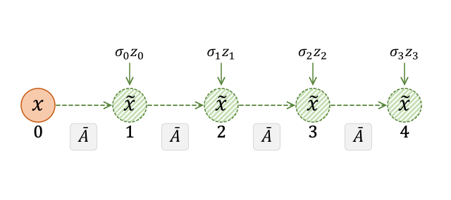
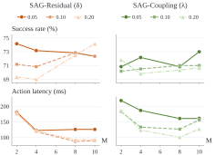
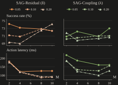

1.89–2.22×
Action generation speedup
on LIBERO
2.13–3.27×
Action generation speedup
on RoboTwin 2.0
Plug-and-play
No additional training
or auxiliary models
Two algorithms
SAG-Residual
SAG-Coupling
§ 1 · Real-World Demos
Same task. Faster inference.
The video could not be loaded. Select another task or reload the page.
§ 2 · Observation
Action Generation Is Now the Remaining Bottleneck
Fast-WAM
282.9 / 317.4 msSAG Cuts Action Latency
+ SAG-Residual
127.2 / 165.1 ms+ SAG-Coupling
139.9 / 175.6 msFaster-WAM
204.9 / 251.4 ms+ SAG-Residual
101.4 / 148.1 ms+ SAG-Coupling
108.6 / 157.2 msVisual processing + VAE encoding + other stages
Action time saved (vs. baseline action)Values: action / overall latency (ms)
Fast-WAM
280.8 / 315.1 msSAG Cuts Action Latency
+ SAG-Residual
126.9 / 165.1 ms+ SAG-Coupling
141.2 / 177.2 msFaster-WAM
205.7 / 260.5 ms+ SAG-Residual
118.6 / 165.8 ms+ SAG-Coupling
110.0 / 159.5 msVisual processing + VAE encoding + other stages
Action time saved (vs. baseline action)Values: action / overall latency (ms)
Fast-WAM
429.0 / 481.7 msSAG Cuts Action Latency
+ SAG-Residual
132.5 / 185.5 ms+ SAG-Coupling
201.1 / 251.5 msFaster-WAM
286.4 / 346.9 ms+ SAG-Residual
87.5 / 148.2 ms+ SAG-Coupling
120.4 / 180.4 msVisual processing + VAE encoding + other stages
Action time saved (vs. baseline action)Values: action / overall latency (ms)
Faster-WAM
117.7 / 160.9 msSAG Cuts Action Latency
+ SAG-Residual
50.5 / 94.2 ms+ SAG-Coupling
57.9 / 101.2 msVisual processing + VAE encoding + other stages
Action time saved (vs. baseline action)Values: action / overall latency (ms)
§ 3 · Method
Speculative Action Generation

-
Drafting
Generate multiple draft states through simple mathematical computations using a reference from the action model.
-
Parallel evaluation
Obtain the velocity predictions needed for verification in one batched action DiT call.
-
Verification and correction
Accept drafts in order. At the first rejection, correct that draft, discard subsequent drafts, and restart drafting from the corrected state.
Baseline and SAG animations
(a) Baseline Action Generation
The baseline generates actions through sequential denoising, with each DiT call depending on the state produced by the preceding update. In this example, ten integration steps require ten DiT calls in total.
(b) Speculative Action Generation
SAG generates draft states at low computational cost and verifies them in one batched DiT call, enabling multiple integration steps per call. In this example, ten integration steps require four DiT calls in total. and denote single-state and batched DiT call latencies, respectively, with .
Latency
§ 4 · Algorithms
Two Alternative Algorithms
Only at x₀1 extra DiT call

§ 5 · Results
Simulation Experiments
| Success rate (%) ↑ | Action latency | Overall latency | |||||||
|---|---|---|---|---|---|---|---|---|---|
| Method | Spatial | Object | Goal | Long | Avg. | ms ↓ | Speedup ↑ | ms ↓ | Speedup ↑ |
| 98.2 | 98.6 | 97.2 | 92.4 | 96.60 | 140.04 | 1.00× | 175.18 | 1.00× | |
| + SAG-Residual | 99.2 | 98.0 | 97.0 | 92.2 | 96.60 | 63.34 | 2.21× | 98.86 | 1.77× |
| + SAG-Coupling | 98.6 | 97.8 | 96.8 | 94.6 | 96.95 | 94.40 | 1.48× | 129.72 | 1.35× |
| Fast-WAM | 97.2 | 99.6 | 95.4 | 94.6 | 96.70 | 282.88 | 1.00× | 317.36 | 1.00× |
| + SAG-Residual | 97.8 | 99.8 | 96.0 | 94.6 | 97.05 | 127.17 | 2.22× | 165.13 | 1.92× |
| + SAG-Coupling | 97.6 | 99.4 | 96.2 | 94.2 | 96.85 | 139.85 | 2.02× | 175.60 | 1.81× |
| Faster-WAM | 99.4 | 99.6 | 98.2 | 98.2 | 98.85 | 204.88 | 1.00× | 251.44 | 1.00× |
| + SAG-Residual | 99.0 | 99.8 | 98.0 | 99.0 | 98.95 | 101.38 | 2.02× | 148.11 | 1.70× |
| + SAG-Coupling | 98.6 | 99.8 | 99.2 | 97.8 | 98.85 | 108.56 | 1.89× | 157.23 | 1.60× |
| Success rate (%) ↑ | Action latency | Overall latency | ||||||||||
|---|---|---|---|---|---|---|---|---|---|---|---|---|
| Method | Cam. | Robot | Lang. | Light | Backg. | Noise | Layout | Avg. | ms ↓ | Speedup ↑ | ms ↓ | Speedup ↑ |
| 65.83 | 82.32 | 86.48 | 96.30 | 94.59 | 84.05 | 85.45 | 84.13 | 139.03 | 1.00× | 174.41 | 1.00× | |
| + SAG-Residual | 68.75 | 78.79 | 86.48 | 97.53 | 98.38 | 84.82 | 85.45 | 84.86 | 59.72 | 2.33× | 93.89 | 1.86× |
| + SAG-Coupling | 65.83 | 80.30 | 87.70 | 98.77 | 94.05 | 83.27 | 85.45 | 84.13 | 82.47 | 1.69× | 119.12 | 1.46× |
| Fast-WAM | 16.25 | 41.92 | 72.13 | 84.57 | 47.57 | 33.07 | 60.00 | 49.14 | 280.83 | 1.00× | 315.14 | 1.00× |
| + SAG-Residual | 17.08 | 44.44 | 72.95 | 83.33 | 48.11 | 33.85 | 58.64 | 49.60 | 126.90 | 2.21× | 165.05 | 1.91× |
| + SAG-Coupling | 17.08 | 44.95 | 73.77 | 82.72 | 46.49 | 32.68 | 62.73 | 49.93 | 141.20 | 1.99× | 177.17 | 1.78× |
| Faster-WAM | 54.58 | 68.69 | 95.08 | 95.68 | 58.38 | 63.81 | 83.18 | 73.64 | 205.74 | 1.00× | 260.53 | 1.00× |
| + SAG-Residual | 54.17 | 70.71 | 95.49 | 95.06 | 58.38 | 62.26 | 80.45 | 73.17 | 118.57 | 1.74× | 165.75 | 1.57× |
| + SAG-Coupling | 53.75 | 69.19 | 95.49 | 94.44 | 58.92 | 63.81 | 83.18 | 73.57 | 110.01 | 1.87× | 159.50 | 1.63× |
| Success rate (%) ↑ | Action latency | Overall latency | |||||
|---|---|---|---|---|---|---|---|
| Method | Clean | Randomized | Avg. | ms ↓ | Speedup ↑ | ms ↓ | Speedup ↑ |
| 45.14 | 47.86 | 46.50 | 186.14 | 1.00× | 242.54 | 1.00× | |
| + SAG-Residual | 51.18 | 56.22 | 53.70 | 65.16 | 2.86× | 122.25 | 1.98× |
| + SAG-Coupling | 44.30 | 46.92 | 45.61 | 133.68 | 1.39× | 190.23 | 1.27× |
| Fast-WAM | 90.84 | 89.98 | 90.41 | 428.95 | 1.00× | 481.69 | 1.00× |
| + SAG-Residual | 90.76 | 89.98 | 90.37 | 132.53 | 3.24× | 185.47 | 2.60× |
| + SAG-Coupling | 90.42 | 89.08 | 89.75 | 201.13 | 2.13× | 251.51 | 1.92× |
| Faster-WAM | 90.82 | 90.88 | 90.85 | 286.41 | 1.00× | 346.86 | 1.00× |
| + SAG-Residual | 91.36 | 91.22 | 91.29 | 87.52 | 3.27× | 148.19 | 2.34× |
| + SAG-Coupling | 90.92 | 90.40 | 90.66 | 120.37 | 2.38× | 180.37 | 1.92× |
| Fast-WAM | Faster-WAM | ||||||
|---|---|---|---|---|---|---|---|
| Method | K | SR | Action | SR | Action | SR | Action |
| Serial Euler | 20 | 99.0 | 294.86 | 97.2 | 567.59 | 98.8 | 396.87 |
| 10 | 98.2 | 150.82 | 97.2 | 280.30 | 99.4 | 205.33 | |
| 5 | 97.8 | 80.97 | 97.0 | 138.33 | 98.4 | 99.87 | |
| + SAG-Residual | 20 | 99.2 | 101.22 | 97.4 | 198.19 | 98.6 | 185.38 |
| 10 | 99.2 | 69.53 | 97.8 | 125.30 | 99.0 | 135.32 | |
| 5 | 98.4 | 50.23 | 97.2 | 86.59 | 98.6 | 81.48 | |
| + SAG-Coupling | 20 | 98.0 | 187.82 | 97.6 | 204.99 | 99.0 | 201.21 |
| 10 | 98.6 | 105.91 | 97.6 | 132.60 | 98.6 | 120.81 | |
| 5 | 98.4 | 71.99 | 97.6 | 99.19 | 99.2 | 72.51 | |



§ 6 · Citation
@misc{xiu2026speculative,
title = {Speculative Action Generation for World Action Models},
author = {Xiu, Lingkun and Wang, Xiaobo and Wei, Bingwen and Zhao, Ruoyu and Ning, Jiahong and Li, Maoqing and Wan, Renquan and Zhang, Xiao-Ping and Yu, Jincheng and Chen, Xinlei},
year = {2026},
note = {Manuscript}
}